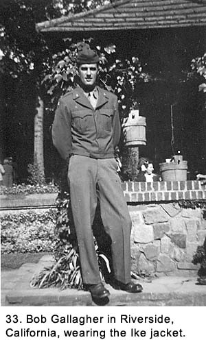
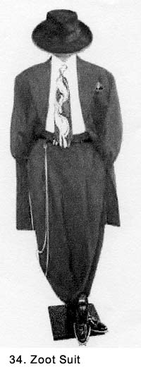
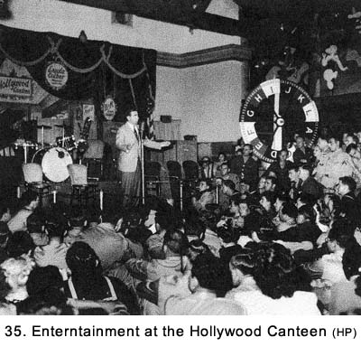

|
Table of Contents < - - - return Chapter 5 < - - - next
World War II Story by Robert F. Gallagher Chapter 4 - Hooray for Hollywood To be able to fill leisure intelligently is the last product of civilization. Bertrand Russell _______________________ When we finally started to get passes to leave camp, we jumped at the opportunity. The pass proper consisted of a small slip of paper signed by some officer that indicated the limited amount of time we were allowed to be away from camp. We picked them up at the orderly room where we signed off on a ledger to tell what time we left the battery area and then again when we returned. We were encouraged to help ourselves to a prophylactic kit (called a pro kit) that contained two condoms and a  small tube of medicine that was available there in a cardboard box next to where the passes were handed out. We had been shown an Army training film about how to use the kit and the possible ramifications if they weren't used. The films were graphic and not something that you would easily forget. Almost everyone took a packet because it was a way of showing your grand intentions. In reality, true expectations for their use were considerably less, and even lower expenditure than that usually resulted. At first, the passes were just to go into the nearby town of Riverside for Saturday afternoon and evening. Any trip out of camp required that we wear a class-A uniform. This meant either a full khaki or wool olive drab (OD) uniform, depending on the weather, complete with ties. Fatigues were allowed out of camp only on a military convoy when we were going to another site or on bivouac. The wool OD uniform required a blouse to be worn while out of the camp. About halfway through our training we were issued the new "Ike" (General Dwight D. Eisenhower) jackets (See Fig. 33). We considered their more stylish look to be a big improvement over the previous model. All passes out of Camp Haan started with a mile walk down to the camp's main gate where we caught an army bus ride into the center of Riverside. There was a regular shuttle service between the camp and the town. For any trip beyond Riverside, we relied on hitchhiking for transportation because it had two big advantages over commercial buses that were also available: It was free and always much faster. In 1943, Riverside was a small and beautiful southern California town with a small mission to identify it as a historical site. Most of the homes and even the railroad station had those architecture features of white or pastel-colored stucco walls with red tile roofs that were unique to that part of the country. There were flowerbeds in abundance, and even the business district was ablaze with colorful flowers during most of the year. I had never seen most of the varieties of flowers before that time. The citizens were friendly as a general rule, and they had set up a large canteen for the enlisted men to enjoy. However, the canteen and everything else in town, including out on the sidewalks, was so crowded with GI's that it was a reminder that you were not completely removed from military life. There were still officers aplenty who required a salute, military police (MPs) walking the streets and a general feeling that you were not completely free of Army regulations. Those factors kept the trips from being a complete 'get away from it all' experience. On the plus side, any place was better than camp and it was a chance to get away from the routine of daily army life. It offered some different scenery. A trip out of camp also meant that you could not be selected for some special work assignment on your off duty time. It must have been a great shock to the permanent residents of Riverside and other towns like it that were near army camps to be overrun by tens of thousands of soldiers who had recently become their neighbors. There was no way to accommodate such an influx of people without having some problems. Housing was at a premium, and every spare room in private homes was rented out, usually, to the wife of some soldier stationed nearby at a rate higher than the going amount in other parts of the country. All businesses, especially the bars, did a thriving business. My friends and I selected the bars we would return to on future passes. We tried the serviceman's canteen and found little to enjoy there. It was always over crowded and it had the feeling of being more like a cross between a church and a library. Le Claire described it as being "short on action and big on boredom." The bars were fairly quiet in the daytime while the noise picked up dramatically after dark. This was mainly the effect of the extended hours spent drinking and somewhat to the more expansive playing of the jukebox in the later hours. One of the anomalies of California that I noticed immediately was the popularity of what I called "hillbilly music." I had thought that this was limited to the deep southern states but it was played extensively in the bars, soda fountains, social clubs, and elsewhere throughout that part of the country. I had trouble finding a song that I enjoyed on some jukeboxes and the continuous playing of a few of the most popular country songs of the day became more than a little tiring. Finally, after more weeks of training, we got some two-day passes and several times we traveled to nearby San Bernardino and then up into the mountains nearby to the resort areas of Lake Arrowhead and Big Bear Lake. The scenery up there was spectacular, and it was always hard to leave. We
were warned about the Mexican-American civilian gangs in nearby San Bernardino who were
called Zoot Suiters. They dressed in outrageous - looking black suits all the time,
regardless of the weather (See Fig. 34). The jackets were knee length, and
had extremely wide and padded shoulders. The pants had a high waist, blossomed out like
bloomers, and tapered into a tight fit at the ankles. Their black
"porkpie" fedoras had a very wide brim, flat on the top and often
sported a large feather. They wore black shoes with high heels and thick
soles, white dress shirts with a large flared collar, garish colored ties
sometimes tied in a bow, and a gold watch chain that tied to their belt and
looped down to their ankles. The chain was twirled out in front of them as
some form of gang ritual. Their hair was slicked back on the sides in a
“ducktail” style. Despite their freakish looks, this was a tough
bunch and we were told to travel only in large groups when we were in their
territory. There were several incidents between them and the GIs while we
were at Camp Haan. Later, we heard that contingents of these gangs attacked
and badly beat eleven sailors on shore leave in Los Angeles. On the
following night, 200 sailors descended on Finally, we were eligible for an occasional three-day pass. We would take a bus into Riverside and then hitchhike into the Los Angeles area. The civilian drivers would stop and pick us up immediately, and they would often go out of their way to drop us off at our final destination. Our number one destination in the L.A. area was Hollywood because that's where the action was. There was dormitories set up in homes, schools, churches, and lodges just to accommodate service men on leave. We usually paid a nominal fee like fifty cents or a dollar per night for a bed that always included a continental breakfast. One of our more important stops in Hollywood would be the Hollywood Canteen over on Canuenga Boulevard (See Fig. 35) during the day to see many of the big-name movie stars. They also served free food there, which made our budgets stretch further. I had a nice chat with two of the big movie stars of the day, Walter Pigeon and Marsha Hunt, while there. I also got tickets and went to several radio shows, including Bob Hope's and Jimmy Durante's.  In the evening, we usually headed over to The Palladium Dance Hall (See Fig. 36). It's hard to describe the size of this ballroom and the action that was going on inside. It was like stepping into another world: a world of excitement and anticipation. It could only be compared to one of today's giant rock concerts; only it was a little more civilized. One of the nation's big dance bands was always playing there. I saw Gene Krupa and Woody Herman several times. There were thousands of service men from every branch of the military with a few civilian men and thousands of sun-tanned California girls - mostly blonde and beautiful. The girls were decked out in their Sunday best. We entered and stood in a large lobby-like area next to the dance floor, checking out the girls while they were rating us. The huge crystal chandeliers, mirrored walls, and ornate architecture made the place look like some regal palace. Off in the distance across the dance floor, about a block away, would be Woody Herman, slightly bent over, walking and swaying up and down the elevated stage, playing his clarinet. Loud speakers were blaring the music around the room. If you wanted to get a good look at Woody, you had to dance about three numbers while you worked your way through the crowded dance floor up to the bandstand. The noise was loud and the music was great, while the orchestra played all of the great songs of the day. Then the band would start into one of its swing numbers, and everyone dancing would go into his or her jitterbug act. The place would rock with excitement. It was fun to hear, watch, and participate. To say that we loved the Palladium Ballroom would understate our feelings. It was a dynamic and entertaining place to be.
When we left there late in the evening, we would go to one of the big cocktail lounges around town. They usually had a combo or a full-sized orchestra playing and a small dance floor. They would be mobbed with people, most of whom were in the service, some with dates. We would stand up at the bar, which was about four deep with people. Most of us drank only beer, but there were a couple of rum drinks available that created a lot of interest. One was called the Cuba Libra, a mixture of Coke and rum. The other called a Zombie, consisted of eight kinds of rum, which was guaranteed to produce a drunken state immediately and an unbelievable headache the next day. While everyone would talk about these drinks, there were few people who would actually partake of them, at least more than once. The elaborate cocktail lounges and semi nightclubs in L.A. were exciting places to be, especially for a young adult like myself who, prior to entering the army, had never seen anything like this before. It made me feel very grown up and somehow part of the swinging "Hollywood Set." In civilian life, my fake ID only gained me entrance to the lowliest of saloons in my immediate neighborhood where the proprietor would sacrifice a chance to be raided by the police for serving minors in order to make a few extra dollars. The L.A. places were ornate, busy and noisy; and the (fake) IDs we carried to extend our ages up into the legitimate range never seemed to be required to gain entrance. Once in a while, a fight would break out in one of the bars, but it would usually be stopped immediately. The nightclubs always had civilian bouncers as big as gorillas who would quiet the pushing matches before they escalated. For all the drinking and revelry that was going on and the mixing of different service personnel, the places were quite civilized. Occasionally, we would go to one of Hollywood's well-know nightclubs like the Brown Derby, just to say we had been there. We usually just went to the bar and had one or two beers because the place was too expensive to stay very long on our limited finances. We would hitchhike back to Riverside on Sunday afternoon, catch a bus there, and be in camp by midnight when our passes were up, in time for bed check. The time spent in Hollywood gave us lasting memories that we strove to duplicate as often as possible. They were difficult to match anyplace else. Chapter 5 < - - - next Table of Contents < - - - return
Footnotes and Source of Photographs. Copyright, Robert F. Gallagher, 1999 - 2015, all rights reserved on all images and content.
|